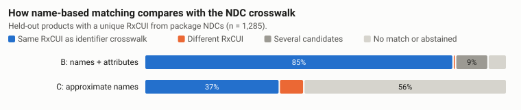

This research project uses public drug-label and terminology data and no patient records.
What survives when drug labels are turned into FHIR medication records?
Research teams and drug-dictionary maintainers copy product identity from DailyMed labels and RxNorm into analysis tables and HL7 FHIR (Fast Healthcare Interoperability Resources) records. I measured, field by field, which identity and strength details survive that conversion for 1,475 current prescription labels for selected cardiometabolic drugs, and what common shortcuts lose.

| Representation | Applicable fields | Preserved exactly | Including documented conversion |
|---|---|---|---|
| FHIR R4 + sidecar | 24,615 | 100.0% | 100.0% |
| FHIR R4 core only | 24,615 | 87.6% | 87.6% |
| RxCUI only (current RxNorm) | 20,760 | 20.9% | 50.3% |
| DailyMed packaging service | 20,760 | 37.2% | 37.2% |
| Flat export shortcut | 24,615 | 24.2% | 32.2% |
| Latest label version only | 3,855 | 98.6% | 98.6% |
The data
The corpus is every current DailyMed human prescription label whose products contain metformin, a sodium-glucose cotransporter 2 (SGLT2) inhibitor (empagliflozin or dapagliflozin), a glucagon-like peptide-1 (GLP-1) receptor agonist (semaglutide or liraglutide), one of seven insulins, atorvastatin or lisinopril, including combination products. It holds 1,475 labels with 2,386 products, plus the preceding version of 218 labels. RxNorm came from the public RxNorm API, release of October 5, 2026. Every response was cached with its URL, time and SHA-256. Human regular, NPH (isophane) and 70/30 insulins sold without a prescription are filed as over-the-counter (OTC) labels and are outside this scope; 7 labels in the 2006 to 2008 format had no structured product section.
How it was measured
Each label was parsed into a lossless PostgreSQL layer that keeps NDCs with their hyphens, decimal strengths as written, and the class code that says whether a strength refers to the ingredient or its active moiety. Each label version became a FHIR R4 Bundle of Medication resources plus a companion record (a sidecar validated by a JSON Schema) for what R4 has no element for. The official HL7 validator checked every Bundle. A reverse transform read the files back and a second, separately written XML reader gave the comparison values. I split labels into development (30%) and held-out (70%) sets before tuning, and froze the matching rules before evaluating held-out labels. Later correctness fixes to comparison code, the FHIR export and one parser rule required reruns of the affected stages. The analysis plan records each change; no matching rule changed.
Representing the label without changing its meaning
FHIR elements left empty where the source value does not fit
R4 Medication has a manufacturer element, but the labeler named in a Structured Product Labeling (SPL) document is often a repackager or distributor, and R4 states that the element is not meant for distributors. R4 also has a status element, but SPL marketing status describes Food and Drug Administration (FDA) listing and does not say whether a dictionary record is in use. Both elements were left empty in FHIR, and the source values were kept in the sidecar. The same rule kept the basis of strength out of FHIR core, because R4 Medication has no element for it. Read from FHIR core alone, 670 active ingredients took the wrong basis-of-strength substance; the sidecar records the basis explicitly.
Comparison against a separate read of the source XML
The round trip was checked against a second XML reader written with a different parser and no shared code. On development labels this found faults in the reverse transform and comparison code. A repeated-moiety error found later affected both readers and required a documented correction. I wrote both readers, so this is a software cross-check.
What the comparison found

- The package-NDC crosswalk gave a unique RxNorm concept unique identifier (RxCUI) for 77.3% of held-out products; for the rest, RxNorm lists none of the product's NDCs as active, mostly for repackaged products. DailyMed's own set-level mapping agreed with it in 1,269 of 1,270 checkable cases.
- Matching normalized names plus strength, form, fill volume and brand agreed with the crosswalk for 99.2% of its answers. Approximate name matching disagreed with the crosswalk for 87 of its 565 answers (15.4%).
- DailyMed's packaging service lists every strength in a label against every product of that label: 856 of 1,662 held-out products got the wrong ingredient count.
- Insulin strengths are coded in three Unified Code for Units of Measure (UCUM) units across labels ([iU], U and [arb'U]). The validator accepted [iU] and U, the sampled terminology check contained no [arb'U] codes, and UCUM defines U as the unit of catalytic activity.
Two worked cases show the detail: a combination tablet preserved in full and an insulin pen that neither name-based approach matched to the crosswalk concept.
Limits
The study covers six ingredient groups at one retrieval date, with one preceding version per label for 218 sampled labels, and RxNorm only as its current release plus the dated NDC history it publishes. The crosswalk is a terminology reference with its own errors. The companion record was designed to hold what the round trip measures, so its complete preservation is partly by construction; the informative numbers are the losses without it. None of this speaks to the clinical correctness of any label.
Reproduce the analysis
unzip medication-identity-source.zip && cd medication-identity
python3 -m venv .venv && .venv/bin/pip install --require-hashes -r requirements.lock && .venv/bin/pip install --no-deps -e .
.venv/bin/medid demo # offline, about a minute, fixture labels only
.venv/bin/medid scope && .venv/bin/medid acquire && .venv/bin/medid pipeline # full studyNeeds Python 3.11 or later, PostgreSQL 16 or 17 server binaries on PATH (the pipeline runs its own cluster), and Java 17 or later with the HL7 validator jar (see the README's validator section). The full run downloads about 530 MB from DailyMed and RxNav.
Report, code and data
- Full report Methods, results and references.
- Source code (ZIP) Code, SQL, schemas, configuration, tests, demo fixture, documentation and results tables.
- Medication dictionary (CSV in ZIP) One row per package NDC in each current label (6,349 rows for 6,316 distinct package NDCs), with label provenance, attributes as labeled, RxNorm status, crosswalk results and review reasons.
- Round-trip field statuses (CSV) Representation x attribute x split counts by status, with applicable denominators.
- Round-trip record outcomes (CSV) Records with all critical attributes preserved, by representation and split, with exploratory intervals.
- Matching outcomes (CSV) Approaches A, A2, B and C by split and outcome.
- Label version changes (CSV) One row per label with a retrieved preceding version.
- Results workbook (Excel) Summary tables, per-label version changes and removed package NDCs, with a definitions sheet.
- Companion record schema (JSON Schema) The local schema every sidecar validates against.
- FHIR examples (ZIP) The two Bundles and sidecars shown in the comparison viewer.